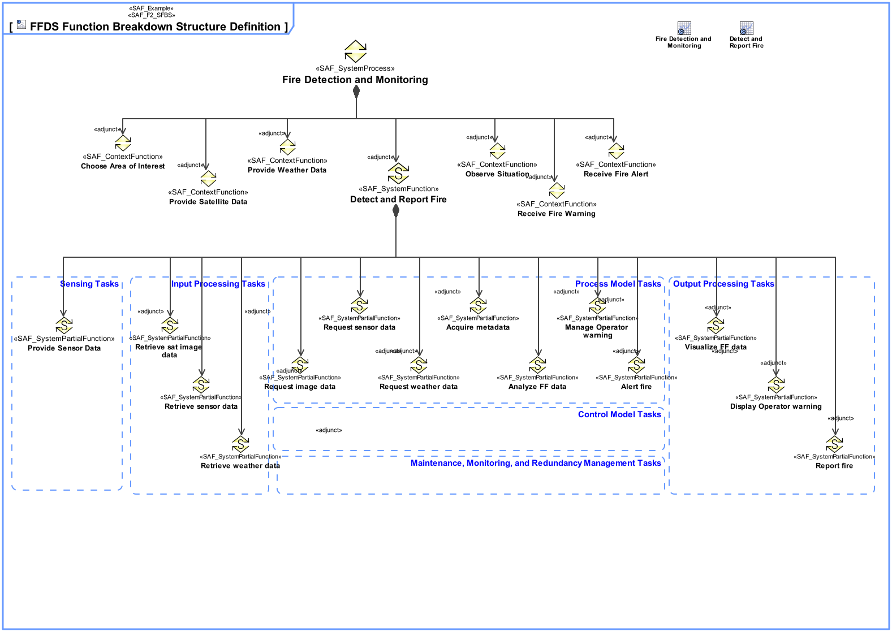

F2_SFBS System Functional Breakdown Structure Viewpoint
| Domain | Aspect | Maturity |
|---|---|---|
| Functional | Taxonomy & Structure |

The System Functional Breakdown Structure Viewpoint defines the structured, modular functional breakdown of the SOI beginning with System Processes, over identified System Functions further refined down to System Partial Functions. The reuse of System Functions, and System Partial Functions over Function Trees of the SOI is facilitated.
The System Functional Breakdown Structure Viewpoint supports the “System Requirements Definition Process” activities of the INCOSE SYSTEMS ENGINEERING HANDBOOK 2015 [§4.3] and contributes to the System Function Definition.
One or more more block definition diagrams (BDD) featuring activities representing System Processes, System Functions, System Partial Functions, and their aggregation composing the functional breakdown structure.
Tool specific analysis diagram featuring the relationships between System Processes, System Functions, and System Partial Functions.
The following Stereotypes / Model Elements are used in the Viewpoint: